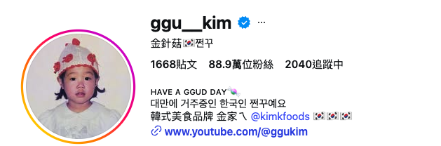

PROJECT 04 / BRANDING / CAMPAIGN
소장하는 굿즈에서,
전시하는 경험으로
G-DRAGON 대만 한정 세트 · VEASLY
예쁜 굿즈가 다시 상자에 들어가는 이유
GD 대만 한정 세트 프로젝트에서 팬의 니즈 파악, 패키지 콘셉트 제안, 사전 이벤트, 홍보 콘텐츠와 크리에이터 협업, 출시 후 고객 반응 조사까지 참여했습니다.
예쁜 굿즈를 구매해도 전시할 방법이 없어 다시 상자에 넣어두는 불편함을 팬으로서 경험했습니다. 개봉 이후에도 일상 공간에서 소장품을 즐길 방법이 필요했습니다.
소장 이후에도 감상하고 싶은 마음
팬이 원하는 것은 굿즈를 소장하는 일뿐 아니라, 개봉 후에도 일상 공간에서 감상하는 경험이었습니다. 팬으로서 겪은 보관·전시의 불편함에서 이 니즈를 발견했습니다.
포장에 전시의 역할을 더하다
G-DRAGON을 상징하는 데이지를 활용해, 패키지를 개봉 후 가든 전시대로 사용하는 콘셉트를 제안했습니다. 별도의 전시용품 없이도 소장품을 즐기는 사용 경험을 구매 이유로 연결하고자 했습니다.

출시 실행을 조율하고,
고객 반응을 다음 메시지에 반영하다
02 출시 실행
협업 파트너를 찾을 때 팔로워 수만 보지 않고 대만 팬과의 접점, 콘텐츠 특성, GD·패키지 콘셉트와의 연결 가능성을 비교했습니다. 후보별 장단점을 바탕으로 협업 방향을 기획하고, A/B 콘텐츠 안을 제안해 크리에이터와 구체적으로 조율했습니다. 크리에이터의 개성은 살리면서 상품의 매력이 가장 잘 드러나는 영상으로 완성했습니다.
03 출시 후
고객 의견과 구매 반응을 살펴 가격과 상품 가치에 대한 인식을 파악했습니다. 반응을 바탕으로 제품의 강점과 사용 경험을 설명하는 방식, 후속 홍보 메시지를 조정했습니다.
기획·콘텐츠 제작·일정 조율·협업 운영부터 고객 반응을 반영한 개선까지 프로젝트 전반을 관리했습니다.
결과물과 소비자의 반응
패키지 사진과 이벤트 안내, 크리에이터 협업 게시물이 남아 있습니다. 대표 협업 캡처는 조회수 약 89.2만 회, 좋아요 약 4만 개, 댓글 66개를 보여줍니다.

ggu__kim
크리에이터 선정 이유
대만에 거주하며 현지에서 높은 인지도를 쌓은 한국인 라이프스타일 크리에이터로, 한국 문화에 관심 있는 대만 소비자와의 접점이 넓습니다. YouTube 구독자 약 140만 명을 보유하고 있으며, GD에 대한 관심도 높아 한정 세트를 자연스럽게 소개할 수 있는 협업 파트너라고 판단했습니다.
GD 한정 세트의 매력을 전달하면서 구매 채널인 VEASLY의 이용 방법도 함께 소개해, 상품 구매 관심과 플랫폼 인지도를 동시에 높이고자 했습니다.
크리에이터의 콘텐츠와 계정 정보를
함께 확인할 수 있습니다.
언론 노출
GD 대만 한정 세트의 출시 소식과 상품 구성을 현지 매체에 소개했습니다. 한정판의 차별점과 VEASLY 구매 정보를 대만 고객에게 알렸습니다.